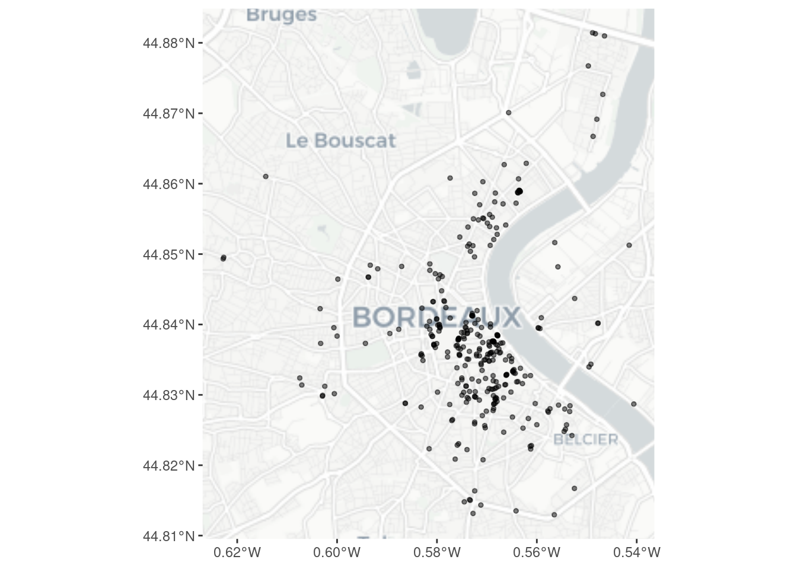
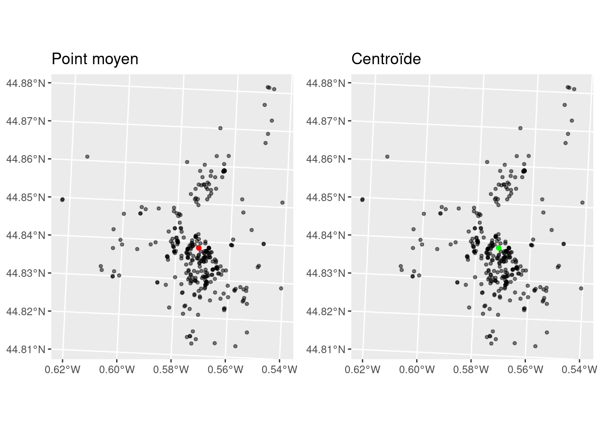
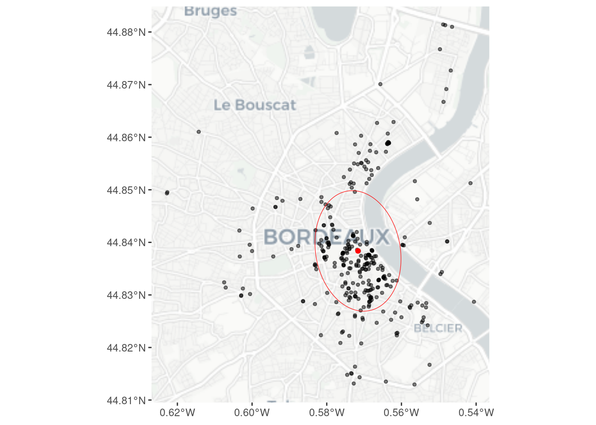

library(sf)
library(dplyr)
library(ggplot2)
library(cowplot)
library(ggspatial)
library(RANN)Analyse spatiale descriptive
Introduction
L’objectif principal de l’analyse spatiale est la description et l’explication de la structure des objets géographiques. Celle-ci repose sur des outils statistiques qui permettent de quantifier l’hétérogénéité spatiale. Parmi ces outils, il en existe une partie qui est proprement descriptive.
Ce tutoriel porte sur certains de ces outils, appliqués aux semis de points, qui sont la forme élémentaire que peuvent prendre les objets géographiques. Résumer statistiquement un semis de point est souvent nécessaire car l’œil nu a du mal à distinguer ses structures. Nous nous intéresserons particulièrement à trois outils : le point moyen, l’ellipsoïde de dispersion et l’indice de dispersion relatif \(R\).
Pour mener ces analyses, nous aurons besoin des packages suivants.
Le semis de point que nous allons étudier est la répartition des immeubles qui font l’objet d’un arrêté de mise en sécurité à Bordeaux.
perils <- st_read("../data/perils_geo.gpkg")Reading layer `perils_geo' from data source
`/home/perisa/Documents/ESR/ENSEIGNEMENT/depot_ens/ASA/ASA/data/perils_geo.gpkg'
using driver `GPKG'
Simple feature collection with 328 features and 7 fields
Geometry type: POINT
Dimension: XY
Bounding box: xmin: -0.622812 ymin: 44.81295 xmax: -0.540579 ymax: 44.88143
Geodetic CRS: WGS 84Pour le calcul des indicateurs, on va passer par un système de projection métrique.
perils <- st_transform(perils, 2154)Voici une visualisation du semis de point dans son contexte géographique.
ggplot()+
annotation_map_tile(type="cartolight")+
geom_sf(data = perils, size=1, alpha=.5)
Résumer la distribution d’un semis de point
Le point moyen
Pour calculer le point moyen, nous commençons par extraire les coordonnées géographiques de nos points.
coords <- sf::st_coordinates(perils)Nous calculons ensuite la moyenne de la longitude et de la latitude.
mean_x <- mean(coords[,1])
mean_y <- mean(coords[,2])Pour enfin créer un objet {sf} de type point.
mean_center <- st_sfc(st_point(c(mean_x, mean_y)), crs = 2154)
mean_center_sf <- st_as_sf(data.frame(type = "mean_center",
geometry = mean_center))Ces étapes sont équivalentes à la fonction st_centroid() sur une union (st_union()) de la couche de points.
ctr <- st_centroid(st_union(perils))
g1 <- ggplot()+
geom_sf(data = perils, size=1, alpha=.5)+
geom_sf(data = mean_center_sf, color="red")+
labs(title="Point moyen")
g2 <- ggplot()+
geom_sf(data = perils, size=1, alpha=.5)+
geom_sf(data = ctr, color="green")+
labs(title = "Centroïde")
plot_grid(g1, g2)
Ellipsoide de dispersion
L’ellipse de distribution directionnelle (en anglais standard deviational ellipse ou directional distribution ellipse) est une figure géométrique résumant la tendance spatiale d’un nuage de points :
sa position (centre) indique le lieu moyen des points,
ses axes indiquent la dispersion des points selon deux directions principales,
son orientation montre la direction dominante (ou axe principal d’allongement) du nuage.
Pour la créer, on commence par calculer la matrice de covariance. Cette matrice est un tableau qui mesure la variabilité et la relation linéaire entre plusieurs variables. Dans notre cas (des coordonnées spatiales), on s’intéresse à deux variables :
X = la coordonnée est-ouest (longitude ou x),
Y = la coordonnée nord-sud (latitude ou y).
La matrice de covariance va donc résumer comment les points sont dispersés dans le plan, et dans quelle direction ils s’étalent le plus.
cov_mat <- cov(coords)L’ellipse directionnelle qu’on trace ensuite est déduite de cette matrice à l’aide des valeurs propres et des vecteurs propres :
les valeurs propres donnent la taille des axes (variance dans les directions principales),
les vecteurs propres donnent leur orientation (la direction de l’allongement du nuage).
eig <- eigen(cov_mat)
eigvals <- eig$values
eigvecs <- eig$vectorsEnsuite, on fixe un paramètre de dispersion. Par exemple p = 1 pour \(1 \sigma\), p = 2 pour \(\sim2\sigma\) (plus large)
p <- 1
semi_axes <- sqrt(eigvals) * pL’étape suivante va récupérer l’orientation avec l’angle du premier vecteur propre.
angle <- atan2(eigvecs[2,1], eigvecs[1,1])Avec ces valeurs (centre, semi-axes et angle), on peut écrire une fonction pour construire l’ellipsoïde.
ellipse_coords <- function(center = c(0,0), a, b, angle = 0, npoints = 200) {
t <- seq(0, 2*pi, length.out = npoints)
x <- a * cos(t)
y <- b * sin(t)
R <- matrix(c(cos(angle), -sin(angle), sin(angle), cos(angle)), 2, 2)
pts <- t( R %*% rbind(x, y) )
pts[,1] <- pts[,1] + center[1]
pts[,2] <- pts[,2] + center[2]
return(pts)
}On exécute la fonction en lui indiquant nos valeurs préalablement calculées.
ellipse_pts <- ellipse_coords(center = c(mean_x, mean_y),
a = semi_axes[1],
b = semi_axes[2],
angle = angle,
npoints = 200)On transforme ensuite les données de sorties en objet gémétrique.
ellipse_poly <- st_sfc(st_polygon(list(ellipse_pts)), crs = st_crs(perils))
ellipse_sf <- st_as_sf(data.frame(type = "ellipse_1sigma",
geometry = ellipse_poly))On finit par une visualisation.
ggplot()+
annotation_map_tile(type="cartolight", zoom = 12)+
geom_sf(data = perils, size=1, alpha=.5)+
geom_sf(data = mean_center_sf, color="red")+
geom_sf(data = ellipse_sf, fill=NA, color="red")Zoom: 12
La dispersion relative d’un semis de point
Il est possible de calculer des indicateurs qui s’affranchissent des métriques et permettent la comparaison entre plusieurs semis. Pour cela, il est nécessaire de calculer \(D_{ppv}\), soit la distance moyenne au plus proche voisin et \(D'_{ppv}\) qui est la distance attendue sous distribution aléatoire. Par le biais de l’indicateur \(R=D_{ppv}/D'_{ppv}\), on aura ainsi un indice relatif d’aggrégation/disperion.
On commence ainsi par calculer la matrice des \(k\) plus proches voisin du semis de point (ici k = 2 car le premier voisin est le point lui-même) à l’aide de la fonction nn2() du package {RANN}.
nn <- nn2(coords, k = 2) On extrait ensuite les distances aux k voisins (colonne 1 = distance au point lui-même (0), colonne 2 = distance au plus proche autre point)
nn_dists <- nn$nn.dists[,2]Puis on calcule \(D_{ppv}\), la moyenne des distances au plus proche voisin.
D_ppv <- mean(nn_dists)
cat("Distance moyenne au plus proche voisin D_ppv =", round(D_ppv,3), "m\n")Distance moyenne au plus proche voisin D_ppv = 89.476 mPour calculer \(D'_{ppv}\), on a besoin d’une surface de référence. Cette surface peut-être l’enveloppe convexe (convex hull) du semis de point. Pour cela, on réalise une union de nos points pour qu’ils ne constituent qu’une seule géométrie et on calcule l’enveloppe convexe.
un <- st_union(perils)
hull <- st_convex_hull(un)On calcule ensuite la surface de l’enveloppe convexe.
surface_m2 <- as.numeric(st_area(hull)) # en m^2 (si CRS en mètres)Pour calculer \(D'_{ppv}\), il nous faut aussi le nombre d’observations.
n <- nrow(perils)Le calcul de \(D'_{ppv}\) se fait ainsi.
D_prime <- 0.5 * sqrt(surface_m2 / n)On peut donc maintenant calculer l’indice \(R\) de dispersion relative.
R_index <- D_ppv / D_prime
cat("Indice R =", R_index)Indice R = 0.5650446Sachant que :
\(R\approx1\) → distribution aléatoire
\(R<1\) → points concentrés / agrégés
\(R>1\) → points dispersés / réguliers